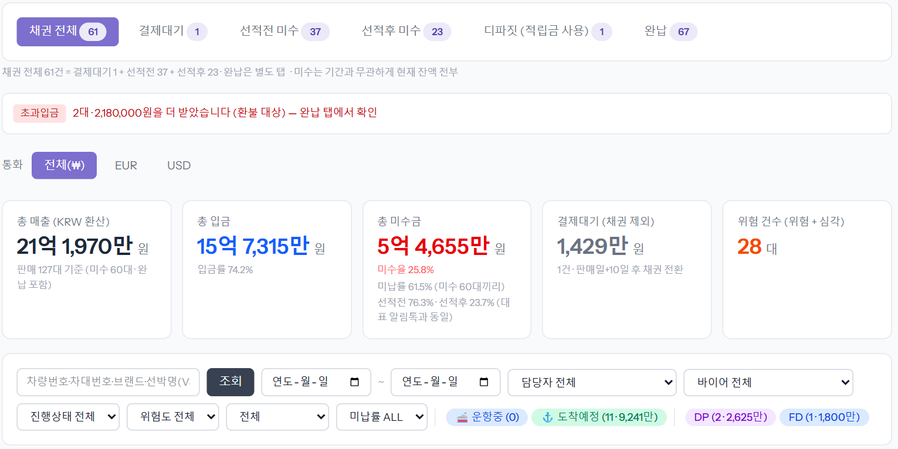
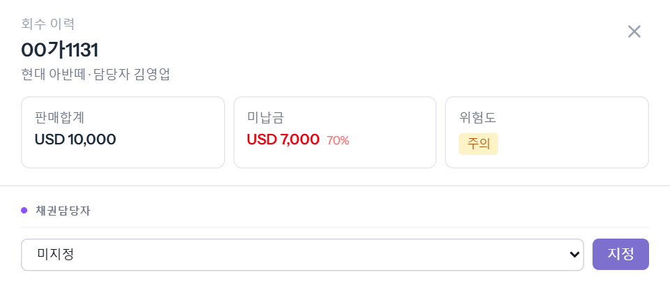
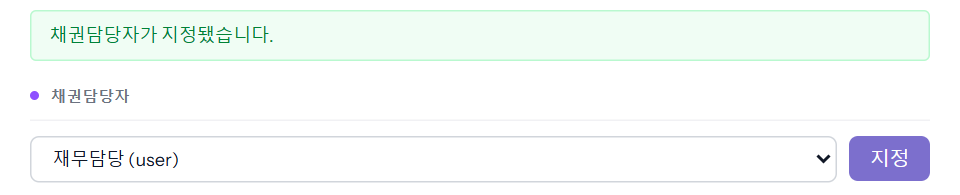
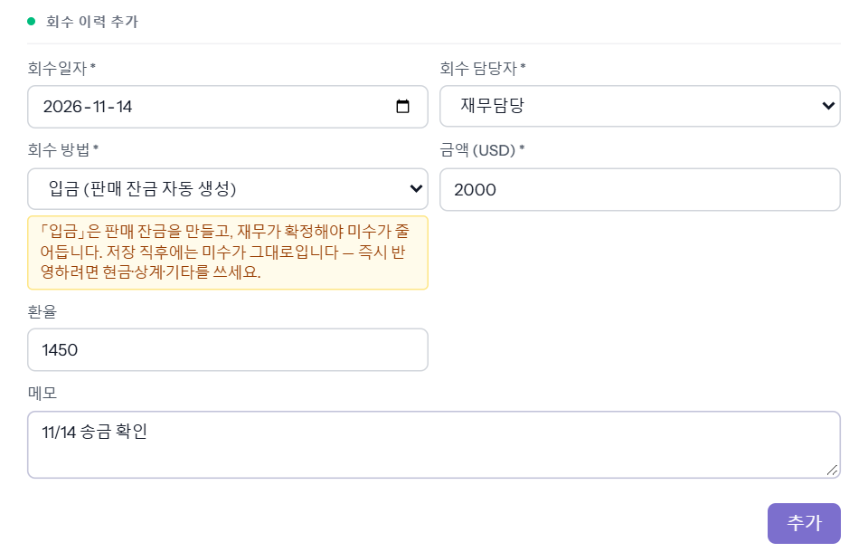
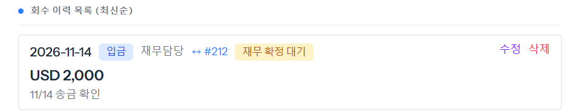
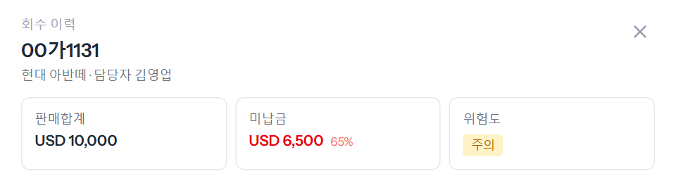
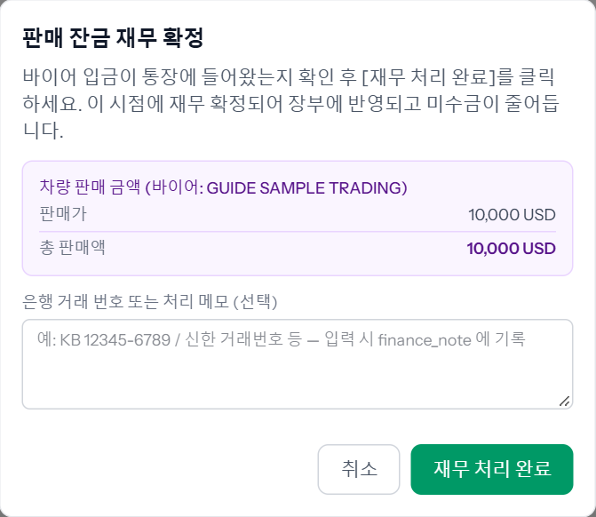
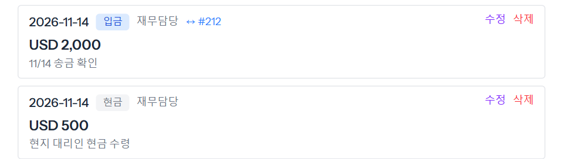

판매 대금 중 아직 못 받은 돈(미수)을 차마다 보고, 받은 돈을 「회수 이력」으로 남기는 화면입니다. 재무가 합니다. 받은 방법에 따라 바로 미수가 줄어드는 것(현금·상계·기타 등)과 재무가 확정해야 줄어드는 것(입금)이 나뉩니다.

줄마다 「위험도」가 붙습니다.
| 위험도 | 뜻 |
|---|---|
| 심각 | B/L 이 이미 넘어갔거나 배가 도착했다 — 차를 넘겨준 뒤라 받을 수단이 사라진 미수 |
| 위험 | 떠난 차인데 입금률이 선적 기준에 못 미친다 · 또는 안 떠났는데 판매 뒤 오래(기본 90일) 됐다 |
| 결제대기 | 안 떠났고 판매 뒤 10일 이내 |
| 주의 | 그 밖의 미수 |
| 안전 | 미수 0 |
※ 날 수·입금률 기준은 회사 설정을 따릅니다(위는 기본값).
위에 판매합계 · 미납금(%) · 위험도가 보입니다. 「채권담당자」에서 이 미수를 챙길 사람을 고르고 [지정]을 누릅니다. 목록의 「채권담당」 칸에도 그 이름이 붙습니다.


회수일자 · 회수 담당자 · 회수 방법 「입금 (판매 잔금 자동 생성)」 · 금액(차 통화) · 환율 · 메모를 넣고 [추가]를 누릅니다.

「입금」은 판매 탭에 잔금 한 줄을 같이 만듭니다. 그래서 저장 직후에는 미수가 그대로이고, 목록의 그 줄에 「재무 확정 대기」가 붙습니다.

회수 방법을 「현금」으로 바꿔 넣으면 판매 잔금을 만들지 않고 미수가 바로 줄어듭니다(예시 현금 USD 500 → 미납금 7,000 → 6,500).

| 회수 방법 | 언제 쓰나 | 미수 |
|---|---|---|
| 입금 | 회사 통장으로 들어온 송금 | 재무가 「재무 처리」에서 확정하면 줄어듦 |
| 현금 | 현금·대리인 수령 등 통장 밖에서 받은 돈 | 바로 줄어듦 |
| 상계 | 바이어에게 줄 돈과 맞바꿔 끝낸 것 | 바로 줄어듦 |
| 기타 | 위 어디에도 안 맞는 정리 | 바로 줄어듦 |
| 손실(셀러부담) | 못 받고 끝내기로 한 돈 | 바로 줄어듦(못 받은 돈으로 기록) |
| 적립금 사용 | 바이어 적립금(같은 통화)으로 갚은 것 | 바로 줄어듦 — 남은 적립금보다 많이는 못 넣음 |
3단계의 입금이 「재무 대기」로 와 있습니다. 통장에 실제로 들어왔는지 보고 [재무 처리 완료]를 누르면 확인 창이 뜹니다. 은행 거래번호 같은 메모를 남기고 [재무 처리 완료]를 누릅니다.

채권관리로 돌아오면 미수가 줄어 있고(6,500 → 4,500), 입금 줄의 「재무 확정 대기」가 사라집니다.
